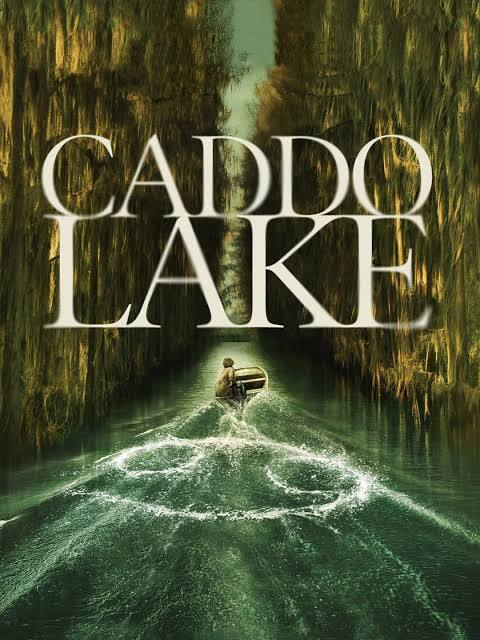
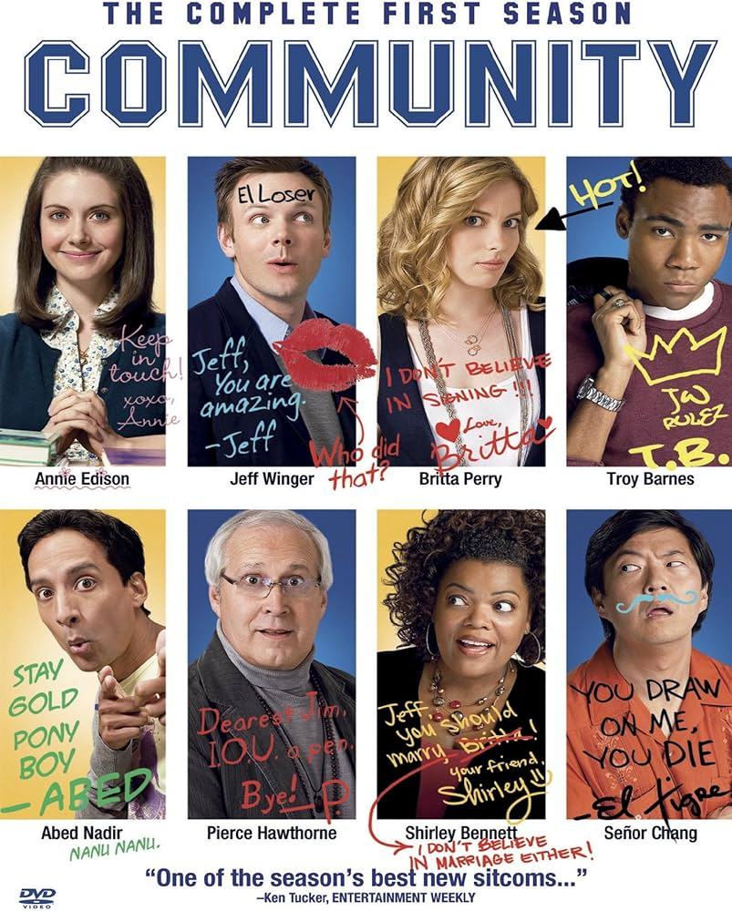
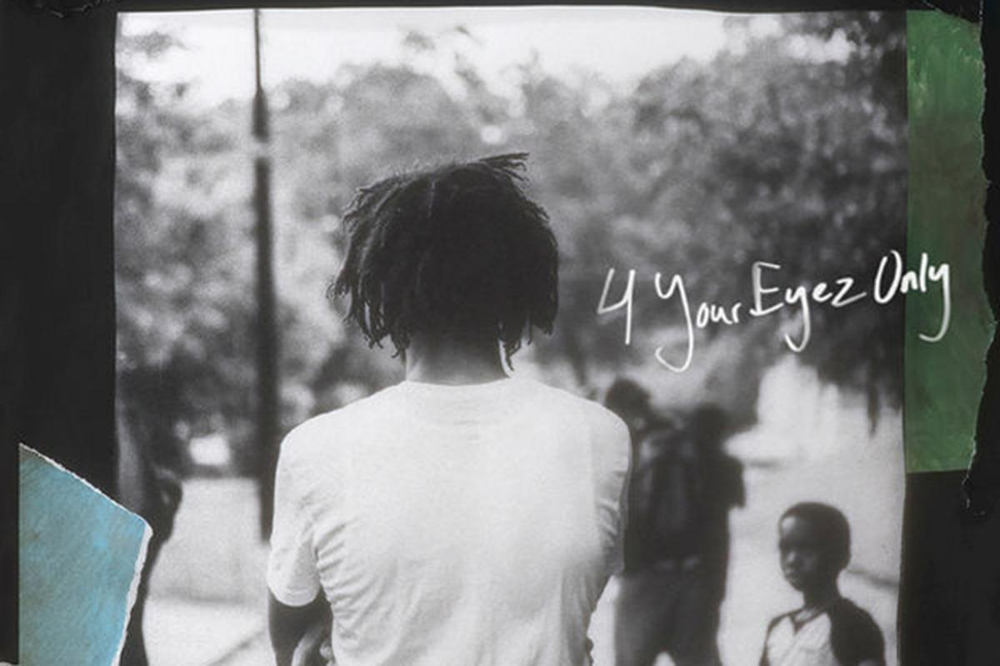

This another great movie released by M. Night Shyamalan. Follows two main characters who's stories are intertwined in more ways than they can expect. The following set of events all is caused when an 8 year old goes missing. All taking place in Caddo Lake. This has all the things that I consider a great movie. It makes makes you pay attention. The ending is even better and the events have you going to youtube to look up an explantion.

The show follows a study group in GreenDale Community College. The band of misfits quickly become friends. This show is of the walls, breaks the 4th walls, has deep messages is self-aware, and is overall a funny and comfy show. This show is something That I constantly come back to for rewatching and still makes me laugh.

J. Cole has been on of my favorite artists since High School. I first listened in freshman year and I was hooked. His music makes me think and he has great allegory for what is happening around us. His albums are great listens and my favriote album is 4 Your Eyes Only.
| Desert Name | Best time to have it |
|---|---|
| Tiramisu | After my birthday Dinner |
| Creme Brulee | After steak Dinner. Best accopanied with a coffee |
| Cheese Cake | At Diner after having a Cheeseburger with sweet potatoe fries |
| Tres Leches Cake | After any Gonzalez-Rivera family function. Be quick about getting seconds or you might be too late |